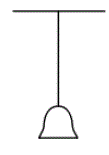

Беседа 3329 от 3877 · Беинса Дуно
Чистене съзнанието
„Отче наш“
Направихме упражнението на дишането. Ръцете нагоре над главата – вдишване. Задържане ръцете с допрени пръсти – задържане на дъха. Спускане ръцете отстрани – издишване. Пет пъти.
Лявата ръка настрани. Дясната допира пръстите на лявата, постоянно се движи към рамото и после настрани. Сега пръстите на лявата ръка допират пръстите на дясната, лявата ръка се движи към рамото настрани. Това се прави три пъти.
Вземете един такъв обикновен процес, какъвто е животът. Най-първо ви се вижда, че е много лесен животът. Казвате: „Аз живея“, но нямате една ясна представа какво е животът. Някой път вие се безпокоите. Безпокойството, то не е животът. Някой път вие се обезсърчавате. И това не е живот. Или радвате се. И това не е живот, защото и радостта ви скоро се сменя. Защо се радвате, и вие не знаете. Радвате се, имате едно приятно настроение.
Хората се намират на разни степени на съзнание. Да съзнаваш нещо значи да преживяваш нещо, да имаш истинска оценка. Да го съзнаваш значи да го опитваш в три посоки: когато е в покой, когато е в движение и когато е в разширение, когато има светлина. Красивият живот, той е животът на светлината. Вие искате да видите един красив свят, това са ред тела, то са степени, то са хора, които носят съзнание. Трябва да приемете всичките блага на светлината, преплитат се. Вие може научно да правите изследвания. Когато имате едно отлично настроение на чувствата, ако имахте един отличен термометър да измервате, щяхте да видите, че когато човек се радва, топлината се различава. Има една топлина, която причинява скръб. Има една топлина, която причинява радост. Степени има пак на самата радост. Радостта е някога кратковременна, след това се сменя. Има една топлина, която е във възходяща степен. Тия работи за вас са непонятни. Как топлината е възходяща, накъде е?
Когато едно дърво расте и казваме, че е във възходяща степен, накъде е възходящата степен на дървото? То едновременно расте надолу, нагоре, настрани, навсякъде. Не само в една посока, дървото не расте само нагоре, растенето е и надолу. Растенето е някъде нагоре към онзи център, за който ние се държим, той е нагоре. Надолу има друг център. Надолу е онзи център, който сгъстява материята. Нагоре наричат онзи център, който разредява материята. Нагоре е центърът, който отслабва движението. В единия център движението се усилва, в другия се отслабва. Единия го наричаме положителен, другия го наричаме отрицателен.
По някой път мислите: „Защо нашият живот тече?“ Къде тече животът? Накъде тече? Казвате: „Скърбен живот.“ Животът може ли скръбно да тече? Какво разбирате под думата скръб?
Нека вземем да разсъждаваме за най-обикновените процеси. Имаме процеса на храненето, имаме процеса на дишането, имаме повисш процес на мисълта, на чувстванията. То са все процеси. Но нека вземем процеса на храненето. Имате хубава храна. Представете си, че храната е хубава. Но щом приемете храната, някой път ви стане неприятно. Някой път има нещо в храната, което не ви е приятно. Ако ви заставят тази храна да ядете, ще се яви разстройство на стомаха. Някой път, след като ядеш, всяка хапка, която дъвчеш има, нещо, което те вдъхновява. Когато човек е доволен от яденето, вие не сте забелязали, има едно движение много музикално на устата, има едно триене на зъбите, също много музикално. Като се допират зъбите, дават една особеност на звуковете. Кътните зъби дават басовите тонове, резците, като се допират, дават сопрана.
Човек трябва да бъде музикален, за да може да разбира. Тогава казвате: „Бъдещето какво ще бъде?“ Кое е бъдещето? Вие считате бъдещето – нещо занапред някъде, не го знаете къде е. За мене бъдещето е разумно. Всяко нещо, което е разумно, е бъдеще. Всяко нещо, което е глупаво, това е минало. Бъдещето е разумно. Бъдещето е вярата, минало[то] е безверието. Бъдещето е любовта. Вие си представяте любовта това, което не е. Любовта е разумното в света, то е навсякъде. В каквато посока да се подвижиш, то е там. Човек, щом не намери [разумното], мъчно е да се ориентира. В живота човек може да се заблуди. Като изгуби своето бъдеще, той се обезсърчава.
То са четири точки, с които се ориентираме: точката, от която слънцето изгрява и точката, в която залязва; има една точка вдясно и има една точка вляво. В един мъглив ден ти може да загубиш тия четири точки и да не знаеш накъде да се движиш. Всичките ония приятни работи, онова разумното, то е изтокът на човека. Къде е изтокът на човека? Вие накъде го търсите? Вашият изток в съзнанието накъде е? Вие по някой път се молите на Господа. Накъде си Го представяте? Как си Го представяте? Накъде подигате ума си? Имате ли ясна представа? Имате представа – туряте Го някъде в ума. Вие Го поставяте някъде. Вие мислите, но това пространство на вашата мисъл е съвсем друго пространство проектирано.
Имате две състояния: обичате един човек, веднага виждате в него нещо Божествено. Не знаете какво е Божественото. Щом не обичате човека, казвате: „Няма нищо Божествено“, виждате един човек тъмен. Божественото има светлина, виждате го в една светла красота. Не го обичате – виждате го тъмен. Питам, туй светлото къде го виждате? Този човек го държите в съзнанието си. Държите го цял, какъвто е. Казвате: „В съзнанието ми е.“ На кое място го държите в съзнанието? Държите го някъде във въздуха, но в този въздух го проектирате в един умствен свят. Държите го и няма да ви тежи, никаква тежест няма. Тежи той само във въздуха. Щом не го обичате, той изчезва из вашия свят. А пък някой път, щом не го обичате, той седи там. Щом е разумен, изчезва. Щом е неразумен, не изчезва – той седи на едно място. Той иска да ти каже: „Дали ме обичаш, или не, не ме интересува, аз тук ще седя.“ Дойде, ти го носиш и казваш: „Дано да се махне, да го не виждам.“
Да допуснем, че вие направите някоя голяма пакост. Този, когото сте наранили, направили сте му пакост, не се маха, преследва ви. Нанесли сте му рана, виждате раната на кое място е. Ако направите пакост на един добър човек, той се изтегля от съзнанието. Щом направите пакост на един неразумен човек, той седи в съзнанието. По някой път вие искате да си направите предмета ясен. Може човек да е много учен, пък предметът да не е ясен заради него.
Запример вие не можете да определите степента на една любов, която не се изменя. Има една любов, която се мени. Има друга любов, която не се мени. Как бихте познали, че един човек ви обича, тъй както обича себе си, туй да е вярно сто и един процента? Колко от вашите проекции на любовта са верни? Казвате: „Божественото.“ Божественото го виждате, но по едно време виждате, че никак не е Божествено. Кое е било Божественото? Ако е бил Божествен, Божествен е. Ако не е бил Божествен, не е Божествен. Божествените неща не могат да бъдат Божествени и после да бъдат небожествени. От де ще се яви Божественото в човека, ако го няма там? Или пък накъде ще изчезне Божественото? Сега то е въпрос на вашата мисъл.
Не само вие, но даже учените и най-напредналите, светиите, по някой път имат противоречия. Светията може да се обезсърчи. След като живял четирийсет–петдесет години, че е достигнал до една степен, дето е свободен от противоречия, след четирийсет и пет години изпъкнат неща в неговото съзнание, неща, които той не ги знае – дошло, без да го види. Вижда го в съзнанието си. Представете си един човек, един светия, избегнал от грешния живот. Иска да се освободи от всички ония неща, които изпъкват в съзнанието му. Четирийсет години той живее и после пак дойдат тия неща и се намесят в съзнанието. Казва: „Колко съм бил глупав. Трябва да си пийна малко винце.“ В него се зароди желанието да види какво е винцето. Не много да пие, но само да вкуси, с края на езика си да го близне. После, яде му се малко месце, да си близне пак с езика – една печена риба – да си близне, не да яде. Като види, в него се зароди желание да близне рибата.
Вие всички търсите щастието. Като срещнете някого, мислите, че ще бъдете щастливи с него. Сега щастието откъде иде? То, щастието, е вложено в самия човек. Ти имаш пет сетива. Не е ли щастие, че имаш очи и можеш да виждаш? Не е ли щастие, че можеш да чуваш? Щом чуваш, ти е приятно. Храниш се, приятно ти е. Щом не се храниш, в тебе веднага настава едно състояние. Или пипаш някой предмет – някой път ти е приятно, някой път никак не ти е приятно.
Казвам, човек трябва тепърва да пречиства тялото. Кра[ищата] на пръстите да бъдат толкоз фини, да възприемат хубавите енергии и вие да усещате трептенията какви са. Щом пипнете един предмет, ръката да показва какъв е предметът – добър ли е, или не. Когато се пипате с вашите другари, ръкувате се, и тогава усещате. Някой път ръкуването е приятно, някой път не е приятно. То е един дълъг процес. Тези чувствания се отнасят към предната част на мозъка. В белите нишки, там се изявява съзнанието. Ако човек знае как са организирани тия нишки, той ще знае и развитието на човека. Тия влакна са повече в мозъка. Щом намалеят тия влакна в съзнанието, животът потъмнява.
Когато вие проектирате една мисъл в една гъста материя, тя се проектира напред и се натрупват известни облаци. Изгубвате естествената светлина, която имате. Вие изгубвате вяра в себе си. Казвате: „Аз не мога да мисля.“ Ако вашето око не може да вижда, кой е причината? В окото ли е причината, или във вас? Запример, когато вие се разгневите, всякога вашите чувства ще изпратят повече топлина в очите, отколкото трябва. Ако скърбите, скръбта има известна топлина. Тази топлина, която изпращате в очите, поврежда очите. Всякога човек трябва да има едно хармонично състояние, защото туй състояние се предава на кръвта. Кръвта на един скърбен човек се отличава. Повредата може да е микроскопическа, но като се повтаря хиляди пъти, тази повреда упражнява влияние, натрупване става.
Запример има една скръб, която пречиства нервната система, пречиства и симпатичната нервна система. Има една скръб музикална. Ако един човек бихте го увеличили, колкото цялата земя да стане, тогава ще може да наблюдавате ония процеси, които стават в тялото. Ще наблюдавате как се пречиства нервната система и как се цапа. Някой път, като погледнете, вашата памет е зацапана, затова не може да помните. Или не може да разсъждавате – зацапана е вашата мисъл. Какво трябва да направиш? Трябва да пречистиш. Ти не може да устоиш, нямаш устой вътре, ако нервната ти система не е чиста. При сегашните условия казвате, че човек трябва да мисли. За да мисли, вече трябва да има една нервна система, която е чиста. Сега говорим за физическото тяло, тъй както е направено.
Вие по някой път се оглеждате в огледалото и не се харесвате. Вие не харесвате, което вашият дядо направил. Дядо ви, да кажем, направил една къща, той както разбирал. Той си заминал и те оставил да живееш в нея. Прозорците не ти харесват, че са малки. Започваш да критикуваш. Какво ти коства да вземеш и да разшириш? Викни някой майстор, разшири ги, да има повече светлина. Или някоя гънка на стаята не ти харесва. Дядо ви толкоз разбирал. Ти вземи, че го поправи. Сега, какво са направили другите преди вас, внесете едно преобразование. Какво ви коства да бъдете спокойни? Разтревожите се. Но дядо ви направил един инструмент толкоз чувствителен – когато направите нещо, той започва да дрънка.

Вие трябва да знаете какви са вашите условия. Сега има известни скърби, които са фиктивни. Запример всякога, когато ще стане атмосферна промяна в природата, по някой път тия промени разширяват капилярните съдове, по някой път ги свиват. При свиването на капилярните съдове чувствате потискане, неразположение. По някой път лятно време има голяма мараня, топлина. После, времето е тихо, нищо не лъха, вие сте неразположен. Когато времето се оправя, вашите капилярни съдове се разширяват, тогава вие сте весел. Когато се свиват, вие чувствате, че нещо ви души. Това да не ви безпокои. Щом сте неразположен, времето ще се развали. Щом сте разположен, времето ще се оправи. Казва: „Весел съм.“ Времето ще се оправи.
Петлите, които са много чувствителни, когато ще се разваля времето, те кукуригат. Когато ще се оправя, пак кукуригат. Когато ще стане землетресение, петлите мълчат, хич не пеят. Казва: „Страшна работа.“ Щом престанат да пеят петлите, нещо лошо има – свиват се капилярните съдове, ти си неразположен. Сега казваме: „Защо петелът пее?“ Понеже от земята се отделя голямо количество електричество, от пластове, които се търкат, то като влезе в организма, свиват се капилярните съдове, изстудява се, чувства нещо страшно.
По някой път всички може да чувствате известни промени. Чувствате, че някой човек ще се разболее. Може да чувствате, че болестта ще дойде или може да чувствате, че работите някому ще се оправят. Барометърът може да предсказва дали времето ще се развали, или ще се оправи, понеже има спадане и покачване в барометъра. При спадането и подигането на барометъра каква е разликата в налягането? Когато възприемате голямо налягане, вие сте скръбни. Когато налягането е по-малко, естествено, вие имате едно разположение.
Та казвам, има три вида налягания. Има едно налягане на човешката воля, има едно налягане на човешките чувства, има едно налягане на човешките мисли. Най-първо, трябва да знаете какъв е характерът на волята. Тя е свързана с материалния свят – там е тази, гъстата, материя. Чувствата са свързани с жидката материя и после имате светлината на вашата мисъл, тя е на въздуха или на етера. Та вие сте дошли на една граница и се говори човек да има силна воля. Човек никога не може да засили своята воля. Ако имате един конец с една нишка, друг конец с две нишки, трети конец с три, с четири, с пет нишки, кой е най-силен? Вие искате някой път да бъдете силни. Трябва да имате повече нишки. От нишките зависи здравината.
Хора с къси пръсти не могат да бъдат силни. Хора с къси и дебели пръсти не могат да бъдат волеви хора. Хора, които имат афектирани чувства, или някой път са се разсърдили и викат: „Това ще направя, онова ще направя“ – това не е воля. Те дигат шум, кряскат и след половин час казват: „Извинете.“ Това не е воля. Някой казва: „Трябва да се прояви волята“, пък той проявява чувствата, че може да кряска. То е прежда, с която не може да се изкара един хубав конец. Освен че нищо не допринася, не усилва волята, но я отслабва. Под думата воля какво се разбира? Ти не можеш да усилиш своята воля, ако не проявиш своята разумност. Волята показва разумно действие. Волята се изявява в един разумен живот.
Вземете музиката. Ако вие искате да хармонизирате една ваша мисъл, вие трябва да разбирате законите на музиката, не тъй, както сега се преподава, но тъй, както е вложена във вас. Ако славеят може да пее, кой го е учил на тия трели, които прави? Къде се е учил? Учил се някъде. Аз виждам консерваторията, в която се учил, виждам и професорите му. Сега има, мисля, в Германия някъде, дето изкарват по една система канарчета – едни да са сопрано, други тенор, трети бас. Такива училища има, в които изкарват такива породи.
Сега вие имате един организъм и вие не сте господари на вашето тяло. Не сте господари и на вашето гърло. Някои говорят грубо. Например някой каже : „Моля, какво искаш да кажеш?“ (Учителят го изговори по няколко начина: грубо, меко, полумеко.) Каква е разликата? Тия хубавите тонове в музиката, те са разумни. Има тонове, които вредят, трошат. В един деликатен организъм на ухото, което е чувствително, един музикален тон може да причини сътресение. Има тонове в музиката – като въздействат на съзнанието, може да подлудят човека. Вземете едно малко чукче и удряйте по ръката. Най-първо ви е приятно. Но ако чукате двеста, триста, четиристотин пъти на едно и също място, на туй място, на което чукате, ще усетите неприятност.
Та казвам, в музиката, ако искате да накажете един човек, може да го накажете лесно. Аз веднъж имах един случай. Един благороден господин слязъл в един хотел, бил на третия етаж. Но вечерта долу се разправят котки и той не може да спи. За да ги изпъди, той им хвърля една тенекия да дрънка, за да спре бъркотията. За да млъкнат трябвало да хвърли една тенекия. Питам, защо е недоволен от котките? Що не тури памук да запуши ушите си? Не му иде наум да запуши ушите си, но хвърля тенекия по котките. Котките как ще си обяснят идването на тази тенекия, как ще си обяснят в тяхното съзнание? Срещнете един човек, той ви погледне, изследва ви. Някой път ви е приятно, някой път не ви е приятно. Какво има да ви безпокои? Казвате: „Много се взира.“ Какво има да се безпокоите, ако този човек се взира? Вие сте схванали лоша мисъл, не харесвате нещо в погледа му. Или някой върви отподире, наблюдава ви. Казва ви: „Не сте ли вие еди-кой си?“ Казвате: „Не съм.“
Та казвам, под думата воля разбирам туй, разумното, с което може да се справите с всичките мъчнотии. Волевият човек не е онзи, който си свива ръцете. То са спомагателни средства. Той може да има воля, без да си свива ръцете. Вземете онези светии. Режат ги на парчета, и пак седят и поддържат убеждението си. Мене ми разправяше един лекар за един случай. Иде един войник ранен. Лекарят иска да му тури упойка на ръката, преди да започне операцията. Войникът казва: „Господин докторе, никаква упойка.“ Лекарят започнал да оперира ръката му и войникът не мръднал ръката си, не свил лицето си. Накрая пита: „Господин докторе, свърши ли работата?“ Туй е воля.
Някой свива веждите си – и най-малкото страдание не може да понесе. Каква воля е тя? Ти ще неутрализираш тия страдания. Дошло някакво малко движение на въздуха до тебе, казваш: „Обиди ме.“ Че как може да те обиди през въздуха? Казваш, че си схванал нещо, което те обидило. Как се предава през въздуха обидата? Вземете на български простата дума говедо. Какво лошо има думата говедо? Го значи отива, веди значи да знаеш. Човек, който отива да знае, какво говедо е? Добре дошли, такива говеда. Учи се човекът в училище, в университет. Казва: „Обиди ме.“ То е неразбиране на въпроса, не разбира слоговете. Ние сме турили в тия слогове значение, което те не съдържат. Че благодарение на всичките говеда хората живеят. Ако говедата не орат, какво ще стане с нивите? С помощта на говедата житото става. Като ви кажат говедо, нямайте лоша мисъл. Говедо и думата магаре са долни. Казва: „Магаре.“ Нищо лошо няма в магарето, трябва да отделиш името от магарето. Може да му туриш друго име. Лошото не е в магарето, то е в името. Човек му е турил името магаре. В съзнанието ред думи има, които трябва да се пречистят. Някой път вие не можете да издържите един лош поглед или някой път не може да издържите една лоша дума. А пък съвременният свят е пълен. Това знаят хората – това правят.
За да можете да изчистите съзнанието си от онези смущения, постоянно трябва да се свързвате с разумния свят. Може да четете ред научни книги. Четенето служи като метод за пречистване на човешката мисъл, на нервната система. Има книги, като ги четете, става пречистване на вашата симпатична нервна система. Има книги, като ги четете, се пречиства мозъчната нервна система. Та казвам, трябва да има някой да подразделя книгите, тъй щото да знаете какви книги да четете, за да може да си въздействате. Все трябва да четете някакви книги. В тази книга има вложена някаква енергия. Някакъв философ е писал, но той е вложил нещо. Вземете една книга от Библията да четете – има нещо вложено. Онова, което пророците са писали, те са го опитали.
Чували ли сте вие един човек да ви каже една любовна дума? Как любовта произнася думите? Сега мисълта спада към много по-ниски трептения. Да допуснем, някои от вас сте музиканти, искате да се занимавате. Вземете един основен тон. „До“ като основен тон може да го пеете. „До“ може да има по-малко трептения или повече трептения, приятно ти е. Но като пееш това „до“, турни разни „до“. Изпей скръб с „до“. Изпей: Скърбен съм само с „до“. Или изпей: Радостен съм само с „до“. Наблюдавайте по какво се отличава „до“-то в дадения случай. С „до“ пееш, че си скърбен, и пак с „до“ пееш, че си радостен. Ще има една разлика в „до“-то.
Разликата е, че когато обичате някого, вие сте излезли с една голяма свещ, когато не го обичате, сте излезли с малка свещ. Малката свещ е малка обич, голямата свещ е голяма обич. Щом обичате някого, вие ще му сготвите най-хубавото ядене. Щом не го обичате, яденето няма да бъде добре сготвено. Щом влезеш в една къща, ще видиш хората обичат ли ви, по хубавото ядене ще знаеш. Ако хлябът е добре опечен – обичат ви. Ако яденето е добре сготвено – обичат ви, любовта се изявява. Ако яденето не е добре сготвено, любовта е съответна. Вие, когато някой път пишете някому, когото обичате, как нареждате думите? Избирате по възможност най-хубавите думи. Някой седи и мисли миличък ли да пише или мили. Каква по-хубава дума може да кажете? Вие, ако бихте писали, как бихте писали? Кое бихте казали: добри приятелю или много добри приятелю? Каква хипербола туряте? Казвате скъпи. Скъпи значи – не можете да го купите, толкоз е скъп, че не може да го купите. Наскоро четох един английски поет, така наредил думите, че всяка дума турил на място. Не зная дали бил окултист или не, но всяка дума е на място, че не може да я замениш. Музикално са наредени.
Ако денят е мрачен и пееш, ще се отлива пеенето. Ако денят е светъл, пеенето ще съответства.
Сега някои хора говорят негативно, но като говорят негативно, искат един положителен резултат да имат. Той казва: „Моите работи няма да се оправят.“ Като каже, че няма да се оправят, иска дано някой да го чуе и да му каже, че ще се оправят. Вие седите и казвате на един ваш приятел: „Ти не ме обичаш.“ Вие го изпитвате, за да ви каже, че ви обича. Ти казваш, че не те обича, но ти не вярваш в това, но правиш политически сондаж. Той казва: „Обичам те.“ Ти питаш, искаш да чуеш още веднъж. Той взема да ти доказва, че те обича. Някой път ние говорим негативно и очакваме положителни резултати. Случва се някой път, кажете: „Аз ви обичам.“ Другият каже: „Аз не ви обичам.“ Но той ви изпитва. Какво трябва да му кажете? Вие ще ме запитате: „Аз като го обичам, коя е причината, че той не може да ме обича?“ Трябва да се обосновете. Той казва, че ви обича.
Аз изяснявам работите другояче. Допуснете, че вие отивате да купите нещо. Човекът ви предлага хубави ябълки. Вие не ги искате. Защо не ги искаш? Другаде намерите и купувате, но от него не купувате. Коя е причината? Как ще обясните тия противоречия? То е изключение. Някой казва: „Не искам твоите ябълки.“ Други, по-кисели, недоброкачествени купува. Погледне тебе и си замине. Хубаво, че не взел твоите ябълки, радвай се. Защо трябва да се смущаваш, че не взел твоите ябълки? Не са за него. Неговият стомах не може да ги понася. Кисели му допадат. Твоите – сладки, хубави, но киселина нямат. Причината е в ябълките. Онези не са толкоз красиви, но имат ябълчна киселина. Тя му е потребна на стомаха. И той си има някакви съображения.
Искате ние да бъдем щастливи, всичко да ни върви наред в света. Ако ти започнеш да изучаваш музика и не спазваш всичките правила, които всички музиканти учени хора са турили, какво ще научиш? Представете си двама души хора – единият е надарен от природата, другият е придобил нещо, което е близо до дарбата. Няма дарба, но с усилие е добил. Спорят те двамата, че човек не трябва да очаква от природата, сами трябва да придобием. И двамата имат нужда от пари. Отива онзи, който не е свършил музикална академия, пее и му дават пари. Другият, свършил академия, не му дават пари. Кой от двамата пее по-добре? Аз давам един пример. Един български учител влязъл в църквата и пее. Като пее в църквата, тези, набожните, казват, че пее хубаво, но никой не го поканва вкъщи. Отива в кръчмата. Като запял, събрали се наоколо, започнали да го слушат и веднага яденето дошло, хлябът дошъл. Пееш в църквата – никой не те кани. Отиваш в кръчмата – канят те хората. Де е по-добре, в кръчмата или в църквата? Там, дето хората оценяват, е по-добре. Да оценим един човек е да му дадем най-хубавото, което имаме – хубавото ядене, което ние имаме, хубавата вода, която ние имаме.
Когато говорим за любовта, разбираме да не мислим, че ако дадеш от своята любов, ще осиромашееш. Как ще осиромашееш, ако откъснеш една ябълка от едно дърво и я дадеш някому? Ти ще изгубиш малко енергия, докато откъснеш, но каква част от енергията ще изгубиш? Представете си, че вие сте на едно място и имате условия да откъснете ябълки, но не сте откъснали. Някой дал на сто души по една ябълка, другият е отказал. Кой ще има по-добри резултати, който дава или който не дава? Кой ще има по-добри резултати, който се упражнява да пее или който не се упражнява? Който се упражнява.
Всякога човек има един вътрешен подтик в съзнанието. Всеки добър подтик, какъвто и да е, услужѝ. Дойде ти една добра мисъл, услужѝ. Казвам, този звънец, ако вятърът е по-силен, по-силно удря. Ако вятърът духа в едно направление, ще има равномерно движение. Някой път вятърът се върти. Вие ще се чудите, трябва да има едно движение на вятъра. Каквото е движението на вятъра, такова ще бъде движението на звънеца.
Сега искам да ви наведа на онези вътрешни процеси. Някой път вие чакате отвън да ви помогнат. Но има едно изречение: „Помогни си сам и Господ да ти помогне.“ Да си помогнеш, то е Божественото. Тогава ще дойдат и хората да ти помогнат. Щом ти си помагаш, то е Божественото. Че хората може да ти говорят, че ти си добър, то е човешко – то после ще дойде. Най-първо, дай ход на онова, Божественото. Ако ти си роден музикант, дай ход на Божественото. Ако си роден за скулптор, дай ход на Божественото. Ако ти си роден математик, дай ход на Божественото. За каквото си роден, дай ход на това. После трябва да имате един по-[горен] от вас. Ти, за да станеш певец, непременно ти в съзнанието си трябва да срещнеш друг певец. Или ти не може да станеш виден певец, докато не си срещнал един знаменит певец, той да стане побудителна причина. Ти не може да станеш учен човек, ако ти не си срещнал друг учен човек. Ти не може да станеш добър човек, ако не си срещнал добър човек.
Някои хора мислят, че могат да станат добри. Ако един човек не го е зърнало слънцето, какъв човек може да стане? Едно цвете, ако слънцето не го е гряло, цвете може ли да стане? Всичките хора са цветя, посетени от разумни същества. Степента на хората зависи [от това] какви същества са ги посещавали. Аз виждам някои цветя, посетени от някой ангел. Този ангел, като ги посетил, той оставил своите подаръци на цветето. Как ще обясните? Вземете една пеперуда – има такива хубави дрехи, като царкиня. На едно малко пространство на крилата има четирийсет цвята наредени, такива хубави цветове. Кой е действал да ги нареди с такова внимание? Самата пеперуда, и тя разбира, че дрехата ѝ е хубава. Тя е толкова грижлива за дрехата, че когато ще се развали времето, дойде, че намери някое листенце, че както и да духа вятърът, като застане под него, нито капка не пада да ѝ развали нейната дрешка. Казва: „Глупава е пеперудата.“ Пеперудата е умна, тя знае да цени. Да кажем, вие имате нещо хубаво в себе си. Защо да нямате разположението на пеперудата – като дойде изпитанието, да се скриете под някое листо? И като дойде буря, вие седите отвън да видите какво ще стане. Какво ще стане? Ще ви нацапа, дрехите ще се развалят. Тогава се заражда една мисъл, казвате: „Така направи Господ света.“ Един негърски свещеник проповядвал и казвал: „Какво правеше Господ, преди да беше създал света? […] Сечеше пръти в света, да бие учените хора.“ Тия страдания не са пръти. Страдаш, търсиш причината. Тази причина е вътре в тебе.
Сега къде ще турите вашето обезсърчение? О-без-сърце. Какво значи обезсърчение? Щом спре сърцето, обесърчиш се. Щом се движи, насърчиш се. Те са естествени положения на съзнанието. Да допуснем, че някои от вас обичате бял хляб, другите обичате чер. Каква е разликата между белия и черния хляб? Черният хляб се отличава по своята хранителност. Вас ви привлича белият цвят. Българите по някой път казват за някого: „Пил мляко с кафе.“ Един селянин казва за гражданина: „Пил мляко с кафе.“ Какво ще прави въпрос, че пил мляко с кафе? Да си купи кафе за няколко лева и да пие и той. Нему се струва, че само гражданинът може да разполага и да пие мляко с кафе. Та и вие сега като този българин туряте – че някой пил мляко с кафе, че той е роден за това. Че и ти имаш право да стоплиш мляко с кафе и да го пиеш. Казваш: „Аз нямам условия.“ Ти може да пиеш.
Казваш: „Няма кой да ме подтиква.“ Не е вярно. Най-първо, слънцето те подтиква да станеш сутринта. Петелът те подтиква. Като пее, казва: „Стани.“ Кучето те подтиква. Като лае, казва: „Стани.“ Говедата мучат, казват: „Стани.“ Реката, като се движи, казва: „Стани.“ Вятърът, бурята дойде, казват: „Стани.“ Всичко наоколо те подтиква. Човек казва: „Няма кой да ме оцени.“ Ако вие сте една нота, турена в албума на един гениален музикант, не ви ли е оценил той? Турил ви в първата октава, във втората, в третата октава. Щом ви турил в своя албум на няколко места, казвате: „Аз не съм оценен.“ Искате да завземете мястото на всичките ноти. Право ли е това? Достатъчно е на едно място да ви тури. Трябва да се промените. Като се промени „до“-то, ще го турят и на друго място. Казвате: „Аз не искам да се изменя.“ Щом не искаш да се измениш, ще бъдеш „до“. Може да се измениш в „ре“, може да се измениш в „ми“, може да се измениш във „фа“, в „сол“, в „ла“, в „си“. Като бъдеш готов на всички музикални промени, тогава ще бъдеш на много места. Казваш: „Аз не искам да се изменя.“ Че какво има, ако се промениш? Вие, като страдате, не искате ли да се промените? […] Като сте радостен, не искате ли да се промените? Имате една радост. Имате едно нормално „до“. Туриш повишено или понижено „до“. Каква е разликата между „до“ повишено и „до“ понижено? Вие щом пеете едно мажорно „до“, има мажорно пеене. Но вие пеете не за Първия център, не пеете за Онзи, Който ви е дал музиката. Щом пееш мажорно за хората, този център е надолу вече. Колко е красива мажорната гама, когато пееш за Онзи, Който ви е дал живота. Мажорната гама е да пееш за хората, да ви [видят]. Тя е гама, която слиза надолу в човешкото съзнание. Най-първо, създайте си един идеал, каквото правите, да го правите за онова, възвишеното, красивото. Към него всякога да оперирате, че всяко обезсърчение да изчезне. Нали съм давал онзи пример за извора. Изворът, който изпратил тия водни струи – най-първо са били чисти. Като са минали двайсет, трийсет или четирийсет километра, тази вода се е окаляла. Какво лошо има в окалянето на водата? Вижте хубавата страна – като мине калната вода, оставя тия утайки. След хиляди години от тия утайки ще се образува една хубава почва.
Казвам, трябва сами да филтрирате, да чистите съзнанието си. Не оставяйте прах в съзнанието си, нито в съзнанието на другите. Казва: „Аз не може да обичам. Аз не може да уча. Аз не може да работя. Аз не може да спя.“ Че какво можеш тогава? Не можеш да ядеш, не можеш да спиш, не можеш да работиш. Какво искаш тогава? Той, като не може да прави всички тия работи, иска всичките хора да му слугуват. Никога не допущайте една отрицателна мисъл в ума си. Научно изследвайте. Ако искаш да чуеш една отрицателна мисъл, ти не я допущай в съзнанието си. Казва: „Аз не може да направя това.“ Ти не допущай за себе си, че не можеш да ядеш.
Аз ще ви наведа един пример. Една българка от Варна, доста благородна, имала четири дъщери. Едната дъщеря, доста своенравна, носила името на реката Йордан в Палестина. Веднъж майка ѝ казва: „Чети Отче наш.“ Казва: „Не искам да чета.“ Била я, карала ѝ се. Казва: „Не искам да чета.“ Майката толкоз се разгневила, че казва: „От тебе човек няма да стане.“ И като я хване, дига я нагоре и я блъсва в земята. Йорданка тогава казва: „Олеле, мамо, ще чета Отче наш.“ Вие сега казвате: „Няма да чета Отче наш. Аз не искам да правя добро.“ Защо да не можеш да правиш добро? А пък като не правите добро, злото само по себе си иде да помага. Злото винаги помага на доброто. Щом дойде доброто, и то помага. Някой път злото в своята помощ прави пакост. Вие не се безпокойте от злото, което някой път прониква в съзнанието ви. Учете се да почиствате съзнанието си. Щом дойдат отрицателните мисли, намерете един начин, един процес, да се отдалечавате от тях. Отрицателните мисли правят едно наслояване вътре в нервната система и след време няма да имаш хубаво разположение и няма да имаш разположение да мислиш, както трябва. От наслояването на отрицателните мисли казваш, че това не може да бъдеш и онова не можеш да бъдеш. Гледайте на светлата страна. Разсъждавайте, че Бог е създал света и искайте всички хора да бъдат щастливи. Тъй е в Божественото съзнание. Онези, които не вървят по Неговия закон, за тях идат известни страдания. Като ти каже Господ да четеш Отче наш, чети. Най-после, ако не четеш, като те вдигне, стърси те и ти тогава четеш.
Вземете сега, хората се бият. Един ден ще дойдат до едно място, ще престанат да се бият, ще се примирят. Питам, защо отрано да не могат да се примирят, защо след време трябва да се примирят? Двама войника се бият. Единият удари и счупи ръката на другия. Другият удари, счупи му крака. Седят и двамата един до други. Единият останал с една здрава ръка, другият с един здрав крак, гледат се. Казват: „Ние сами си създадохме своето нещастие.“ Де е геройството? И двамата герои, но единият със счупен крак, другият със счупена ръка. Какво геройство е това? Не може да ходиш, не може да работиш.
Някой път вие се гневите на Господа. Като се гневите, искате да ви даде нещо повече. Животът не изисква никаква сръдня. Животът е място на най-малките противоречия. Ние в това място на най-малките противоречия създаваме най-големите противоречия. Животът, това е най-малките противоречия. Противоречие, че ти не си ял – нямало супа да ядеш и правиш цял въпрос. Казваш: „Ядох, но супа нямаше.“ Или нямало баница. Имаш обуща, но не били от камилска кожа. Безпокоиш се. Имаш дреха, но цветът не ти харесва. Може би дрехата е топла. По-хубаво дрехата да е топла.
Някой път седите и казвате: „Светски хора.“ Щом не мислиш добре, ти си светски. Щом мислиш добре, ти си духовен, Божествен. Щом мислиш добре, ти си Божествен. Щом мислиш средно, ти си духовен. Щом мислиш неправилно, ти си обикновен човек. Като мислиш Божествено, ти оценяваш: слънцето изгрява заради тебе, звездите изгряват заради тебе, земята се върти заради тебе. Защо да го не оценяваш така? Казваш, че не е заради тебе. Щом казваш, че не е заради тебе – не е заради тебе. Щом мислиш, че е заради тебе – заради тебе е. Щом ядеш храната – заради тебе е. Щом не ядеш храната – не е заради тебе. Туй, което възприемаш в дадения случай, то е заради тебе. Всичкият въздух не е заради тебе, няма да го вземеш. Едно малко количество вземаш. То е за тебе, то е достатъчно. Какво ви коства на вас да възприемате една хубава мисъл? Казвате: „Той е много лош човек.“ Какво ще спечелиш? Ако кажеш: „Той е много добър човек“, пак няма да спечелиш нищо, но в дадения случай кое е по-хубаво да правиш? За мене в моя ум ето как седи идеята. Имате хубава ленена риза. Облякъл си я чиста, но след като я носиш две седмици, стане кирлива, мръсна е вече. Има нещо, което ви е неприятно. Кой направи ризата мръсна? Вземете малко вода, изперете ризата, да стане пак чиста.
Казвам, да станете господари на ума, значи да пречистите вашата мисъл. Всякога оставяйте отбор мисли, отбор желания и постъпки. Вие сте господари на това положение. Ако правите туй усилие, ще привлечете вниманието на оня разумния свят и ще ви дойдат на помощ. Едно дете, което е талантливо и работи, хората му идат на помощ. Защото гениалният човек всякога има голяма глава, гениалният човек използва най-малките условия. Талантливият, и той използва условията. А обикновеният иска големи условия. Гениалният ще се качи горе на Витоша без кон, а пък обикновеният иска кон или автомобил, или аероплан. Всичките хора, които търсят големи удобства, са обикновени хора. Които наполовина намаляват, са талантливи. Тия, които съвсем ги намаляват, са гениални. Казвам, за да станете гениални, никакви превозни средства, на Витоша на крака ще идете. „Да има някой да ме заведе.“ Сега се заражда идеята: „Какво ние може да направим?“ Ако един паяк може да изтъче най-тънката нишка, защо аз като него да не изтъка своята мисъл? Ако една пчела може да събере мед от цветята, защо и аз да не мога да направя същото в своята мисъл? Ако една риба може да живее в чистата вода, защо аз да не мога да правя същото?
Някои от вас се оплакват от слаба памет. Слабата памет винаги произтича от раздвояването на съзнанието. Щом децата си раздвояват съзнанието, влязат ябълките в ума им, то не си учи уроците. Раздвои се съзнанието. Ти искаш да учиш в училището, но имаш предвид да се прочуеш. Ти пестиш своята енергия. Ти, ако речеш да мислиш и искаш да станеш висок човек, няма да станеш. Забелязано е, че деца, които искат да растат, спират растенето. Ако ти туриш на ума си да бъдеш добър, ти ще спреш своя процес. Работи, пей, рисувай без много определена цел да бъдеш гениален. Дай ход на онова, което имаш в себе си. Тогава ще растете. Всичко, което иде в живота, това, което иде и не сте го търсили, благодарете за това. Имате един ден като днешния. Отвън вали сняг. Може би вие очаквате един ясен ден. Ясния ден го има някъде, времето е само тук такова. То е такова, понеже сте много деликатни – да не би да ви опърли слънцето, че турило едно було. Туй сега е тълкувание. Вие не вярвате в туй. Това казвам само за изяснение.
Днешният ден показва, че на вас ви трябва една трезва мисъл. Не голяма топлина, но изобилна светлина с малко топлина. Сега вие способствайте да се изявят вашите дарби. Някои сте големи инженери, някой е голям техник, някой е химик изобретател. Тия хора, които сега изобретяват тия неща в света, гениални ли са? Нас не ни трябва една гениалност, която руши света. Нас ни трябва една гениалност, която създава света. Ти си гениален човек и рушиш. Дойде нещо в тебе обратно, задържаш го в ума си и след туй не си доволен от резултата. Работил си в противоположна посока, а искаш гениални резултати. Казва: „Не мога нищо да постигна.“
Сега, ако ви попитат какво бихте желали да постигнете, какво ще кажете? Ако аз бих бил на вашето място, ето какво ще поискам. Ще пожелая един хубав обед, един хубав ясен ден с чист въздух, хубава прясна вода, една хубава гледка. После бих поискал един оркестър от най-видни музиканти да ми свирят, че аз да слушам. Това бих поискал на първо време. След туй, втория път, ще поискам една хубава книга, една хубава дреха, една хубава шапка. Третия ден ще поискам един бастун. Ако съм млада мома, ще поискам хубаво чадърче, един хубав пръстен. Няма да искам всичко изведнъж. Най-първо ще поискам един хубав обяд и там ще спра. Човек всичко, каквото иска, ще го вземе, но да го използва. Яденето да използва, хубавия ден да използва, хубавата вода да използва. Тогава ще се чувства добре.
Във всинца ви има много киселини. Съберете ги, че направете оцет. Казва: „Вкиснал се е.“ За да се вкисне човек, трябва първоначално да е бил сладък. Може ли човек да не е сладък и да се вкисне? Само сладките работи се вкисват. Вие не можете да бъдете лоши, докато не бъдете добри. Само добрите хора може да станат лоши, защото само сладкото може да се превърне в кисело, оттам ще вземем материал. Киселото само по себе си не седи.
По някой път вашите дарби са, които ви правят нещастни. Колкото човек става [по-]нещастен, той е [по-]даровит. Само даровитите хора страдат. Който не е даровит, не страда. Онзи музикант, който страда, той е даровит, талантлив. Талантливите души страдат, гениалните страдат. Вие страдате, че не сте учен човек. Значи имате възможности да бъдете учен. Вие имате толкоз възможности в природата. Изберете онзи клон в света, който може да ви ползва. Всичко трябва да ви интересува. Ако човек не ангажира всичкия си мозък да участва, той ще има един едностранчив живот. Разбира се това са ред факти, които трябва да се съединят.
Казва: „Да бъде човек добър.“ Но трябва да имате една определена идея какво значи справедлив човек. Трябва да имате една определена идея какво значи справедливост. Турите си идеята, че не сте добри. Отде този бръмбар в ума ви, че не сте добри? Тури си в ума идеята, че не е красив. Той, най-първо, не знае какво нещо е красота. Красотата зависи от известни линии. Красотата е нещо разумно в човека. Бог ти е дал възможност да мислиш, да чувстваш, да постъпваш – то е красота. Красотата седи в твоята мисъл, красотата седи в твоето сърце, красотата седи в твоята воля. Съдържанието на красотата, това е човешкото сърце, а пък онзи простор на красотата, човешкият ум [го] донася. Всеки е красив. Мисли, че си красива. Не ти да създадеш красотата, но вярвай, че като погледнеш лицето, си красив. Има една красота, която е в линиите на тялото. Като видиш един красив човек, имаш хубаво разположение, успокоение. Като видиш красивия човек, ти се успокояваш. В един красив човек като видиш усмивка, ти си доволен. Той като те погледне, ти се зарадваш. Ако си бил недоволен, недоволството изчезва. Мислите ли, че ако се намерите пред лицето на един ангел, че той е станал така изведнъж? То са векове на усилена деятелност, докато той го е придобил. Ангелите са минали през методи. Вие сега сте турени да минете през изпитания. Тия изпитания са за да се подигне вашият ум, сърце и воля.
Да имате една непреодолима вяра и като умира човек, да каже: „Няма да умра.“ Като дойде най-голямото обезсърчение, не вярвай, че нямаш никакви способности. Мислите ли, че ако мене ми затворят устата и ми кажат, че не мога да говоря, че аз наистина не мога да говоря? В дадения случай, когато устата ми е затворена, не мога да говоря, но аз зная, че като се махне тази превръзка на устата, мога да говоря. Казвам, не се поддавайте на онези внушения на черната ложа. Казват ти: „Ти си неспособен човек.“ Не се поддавайте. Запуши ушите. Някои от вас казват, че не могат да мислят. Ти не може ли да направиш разлика между хубаво сготвеното ядене и лошо сготвеното ядене? Вие влизате в една гостилница. Наядете се, и сте недоволен. Като правило, като влезете в една гостилница, щом гостилничарят добре е сготвил яденето, благодарете на гостилничаря, че е сготвил хубаво. Благодарете на онези, които ви прислужват. Ти не си им плащал нищо. Даваш трийсет–четирийсет лева за яденето. Че какво плащаш на гостилничаря, на прислугата? Те са изхарчили много повече енергия, отколкото им плащаш. Ако си гостилничар, ще благодариш за онези, които идват. Този човек, който дошъл да се храни от твоето ядене, той внася нещо в гостилницата.
Някои, които са недоволни, казват: „Какво съм спечелил толкова години?“ Вие имате толкова богатство, и това богатство, което ви е дадено, трябват хиляди години, за да го обработите. Хиляди години ви трябват да обработите туй, което ви е дадено. Изисква се време, за да направите опити. Много работи има разпокъсани – да ги съедините в едно. В една неизградена къща всяка част е разхвърляна. Трябва всяка част да я намериш, да ги съчетаеш, че да направиш едно жилище и да можеш да живееш. Сега ние съчетаваме частите на човешкия ум, на човешкото сърце и на човешката воля. Да се съгради, да се оправи човешкият организъм, да започне душата да живее в това жилище. Да си доволен от тебе значи да си доволен от Господа.
Сега може ли някой да изпее „Махар Бену Аба“? Снощи ни пя тази сестра, не се срамува. Сега соло вие не можете да изпеете „Махар Бену Аба“. Тя има самоувереност в себе си. Вие, понеже нямате самоувереност, не можете да пеете, казвате: „Ще ми се смеят.“ Пред лицето на Великия, Който създал музиката, вие защо да не можете да пеете? Защо се страхувате? (Учителят пее „Махар Бену Аба“.) Аз така бих пял. Трябва да се концентрира мисълта. Пред лицето на Бога искам да пея, че Той да бъде доволен. Щом пея и мисля как ще ме разберат, не върви. Аз, като пея, искам аз да се разбирам. Махар Бену Аба значи: ти седиш пред Великия, тих и спокоен. Фир-фюр-фен е Онзи, Който работи, Великият, Който е в движение, в работа. Махар Бену Аба – ти Го виждаш, Той си почива. Фир-фюр-фен – Той вече е станал и Той работи. Ти пееш, когато Онзи Великият артист седи. Ти пееш и Той те слуша. Ще излезе нещо. Ти като попееш и Той ще попее. Много хора, като са заедно, са герои, пеят.
„Махар Бену Аба“
Сега по какъв начин може да я изпеете? Как бихте изпели, в тенор соло или соло бас? По сърце когато се пеят песните, имат голямо съдържание. Когато умът взема участие, има широчина, красота. Когато волята взема участие, има сила. Три съчетания има. Често вземате една дума, която обичате. Изпейте я. Някоя дума, която ви прави впечатление: може да е собствено име, може да е глагол, прилагателно, някое местоимение, изпейте го. После, в музиката трябва да турите вашата надежда. Надеждата – ти трябва да я материализираш. Вярата е към по-висока степен, в духовния свят е тя. Като дойде любовта, може да пеете в музиката, то е вече Божественият свят. С вярата пеете, то е духовният свят. Те са същества, които ще дойдат. С надеждата ще предизвикате най-малките гении на земята, по които се ръководят хората.
Ако пеете хубаво, всички разумни същества са отзивчиви. Божественото в света не пренебрегва всичко онова, което е съществено, него го има предвид. Божественото винаги има предвид съществените неща, които са необходими за вас. Има неща, които не са съществени, то не ги има предвид. Съществените неща, които всички желаят, то ги има предвид, тях ще ги постигнете. Има неща, които не са съществени, отделете се от тях. И те са потребни, но са обвивка. Съществените неща всякога ще ги реализираш, ще дойдат, то е само въпрос на време. Някои от вас сте повече музикални, някои от вас сте поети. Всичките работи без поезия, без музика, без философия не се постигат.
Да допуснем, че вие искате да пишете, но нямате перо, нямате мастило, нямате книга. Другото противоречие е, че може да имате перо, мастило, но не знаете какво да пишете. Тия двете възможности трябва да се съединят. Първият има перо – не знае да пише. Другият може да пише – няма перо и книга. Двамата като се съединят – този, който има перо и книга и не може да пише, с онзи, който може да пише, но няма перо и книга, като се съединят двамата, ще дадат нещо. Туй, което сърцето не може да направи, ще повика ума на помощ. Умът и сърцето, като се съединят, и волята дойде – ще свършат работа. Някой път вашето сърце не взема участие в живота, нямате чувства. Някой път умът не взема участие. Някой път умът има повече възможности, някой път сърцето има повече възможности. Съединете този, който може, с този, който има и не може, двамата на едно място ги съединете. Тогава работата ще бъде продуктивна.
От много мисъл и недоволство човек остарява. Като погледна света, виждам само недоволство. Недоволен е, че това няма, онова няма, баща му виновен, дядо му виновен, че светът. Пък то не е така. Той не разбира. Отиде в училището, много трудна е програмата. Ти си влязъл в много горен клас. Влез в онзи клас, който ти допада.
Сега каква остана съществената мисъл? Когато ангелите пеят, вие спите. Когато ангелите работят, вие не дремете. Някой път кажат ви да направите нещо и вие казвате: „Не мога.“ В туй сте много силни. Кажете: „Мога.“ Кажи: „Мога да пея.“ Попей си. Каква мъчнотия има в пеенето? (Учителят пее: „Мирно, деца.“)
Първо, цветята трябва да цъфнат. Вие, най-първо, като цветята ще цъфнете, после ще дадете аромат. Ангелите минават около вас и ще се спрат. Сега още не сте цъфнали. Като цъфнете, ангелите минават около вас. Ако вие се спирате при едно цвете, какво ви привлича? Цветето ви привлича, уханието му. В човешката мисъл има нещо много красиво – красиво е, когато човек мисли. Много хубаво нещо има и в сърцето. Няма по-хубаво нещо да видиш човешкото сърце цъфнало, да видиш човешкия ум цъфнал и човешката воля цъфнала, облечена в царска дреха.
Няма по-хубаво нещо да видиш ума, облечен в своята царска дреха, сърцето, облечено в своята царска дреха, и волята, облечена в своята царска дреха. На земята няма по-красиво нещо.
Казвам, по някой път гледайте да видите, като се облечете, да видите ума си, облечен в царската си дреха.
„Само светлият път на мъдростта води към истината. В истината е скрит животът.“
Дванадесета лекция на младежкия клас
10 януари 1941 г., петък, 5 ч. сутринта
София – Изгрев